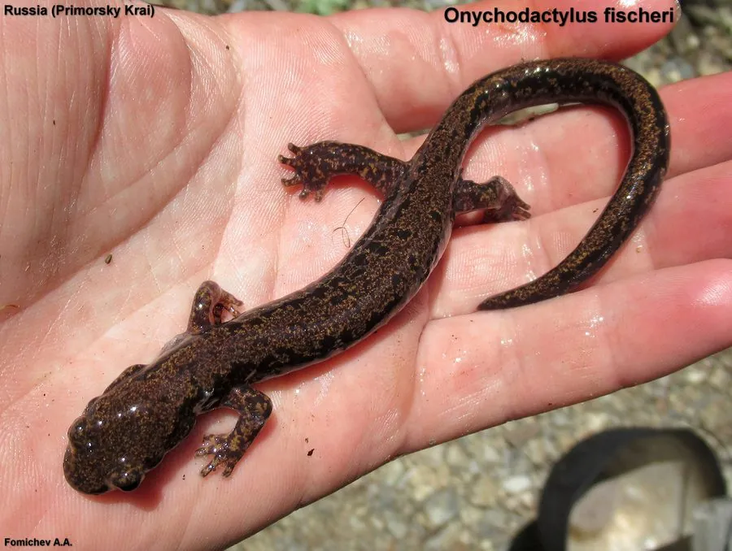

两栖动物 · 动物界
爪鲵 Onychodactylus fischeri

中国东北、朝鲜半岛和俄罗斯远东的溪流蝾螈，趾端长有黑色角质爪，幼体有外鳃，成体无肺，靠皮肤呼吸。
- 分类
- 门脊索动物门纲两栖纲目有尾目科爪鲵科属爪鲵属
- 栖息环境
- 清凉、多石的山区溪流及溪边石缝
- 地理分布
- 中国东北、朝鲜半岛和俄罗斯远东地区
- 保护级别
- IUCN 暂无评估；中国国家二级保护动物
物种志
爪鲵体长 13–20 厘米，身体细长，背部呈黄褐色、灰褐色或暗棕色，散布深色斑点，腹面较浅；头部扁平，眼睛较大，四肢细长，趾端长有黑色角质爪，是它最显著的特征。成体没有肺，靠湿润的皮肤和口腔黏膜进行气体交换。
它分布于中国东北、朝鲜半岛和俄罗斯远东的山地溪流，生活在清凉、溶氧充足、多石的溪流中，白天藏在石缝和水草间，夜间捕食水生昆虫、虾和蠕虫。幼体在溪水中生活 2–3 年，保留外鳃，变态后外鳃消失，但成体仍离不开水。爪鲵对水质和温度变化非常敏感，是溪流环境的指示物种；由于森林砍伐、溪流污染和非法捕捉，种群受到威胁，中国将其列为国家二级保护动物。
形态与习性
- 食性水生昆虫、虾和蠕虫
- 体长约 13–20 cm
- 呼吸成体无肺，靠皮肤和口腔黏膜呼吸
- 繁殖溪流中产卵，幼体水生 2–3 年
- 活动节律夜行性，白天藏在石缝中
- 保护中国国家二级保护动物
趣味知识
- 爪鲵的脚趾末端长着黑色角质爪，帮助它在湿滑的石头上抓附。
- 成体爪鲵没有肺，完全靠皮肤呼吸，因此必须生活在潮湿环境中。
- 它的幼体要在溪水里生活两三年，长成后才离开水域附近。